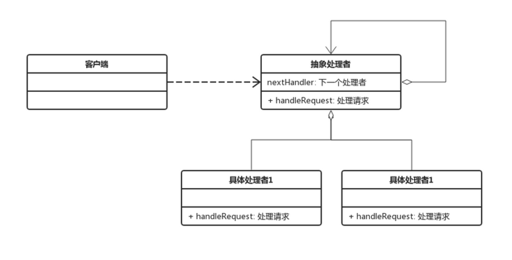

责任链模式定义
责任链模式是一种行为设计模式 ，使多个对象都有机会处理请求，从而避免请求的发送者和接受者之间的耦合关系
允许你将请求沿着处理者链进行发送。 收到请求后， 每个处理者均可对请求进行处理， 或将其传递给链上的下个处理者。
用图例来表示的话如下图所示：
责任链模式结构
Handler（抽象处理者）：它定义了一个处理请求的接口，一般设计为抽象类，由于不同的具体处理者处理请求的方式不同，因此在其中定义了抽象请求处理方法。因为每一个处理者的下家还是一个处理者，因此在抽象处理者中定义了一个抽象处理者类型的对象，作为其对下家的引用。通过该引用，处理者可以连成一条链。
ConcreteHandler（具体处理者）：它是抽象处理者的子类，可以处理用户请求，在具体处理者类中实现了抽象处理者中定义的抽象请求处理方法，在处理请求之前需要进行判断，看是否有相应的处理权限，如果可以处理请求就处理它，否则将请求转发给后继者；在具体处理者中可以访问链中下一个对象，以便请求的转发。

纯的责任链模式：
一个具体处理者对象只能在两个行为中选择一个：要么承担全部责任，要么将责任推给下家，不允许出现某一个具体处理者对象在承担了一部分或全部责任后又将责任向下传递的情况
一个请求必须被某一个处理者对象所接收，不能出现某个请求未被任何一个处理者对象处理的情况
不纯的责任链模式：
允许某个请求被一个具体处理者部分处理后再向下传递
或者一个具体处理者处理完某请求后其后继处理者可以继续处理该请求
而且一个请求可以最终不被任何处理者对象所接收
优缺点
职责链模式的主要优点
对象仅需知道该请求会被处理即可，且链中的对象不需要知道链的结构，由客户端负责链的创建，降低了系统的耦合度
请求处理对象仅需维持一个指向其后继者的引用，而不需要维持它对所有的候选处理者的引用，可简化对象的相互连接
在给对象分派职责时，职责链可以给我们更多的灵活性，可以在运行时对该链进行动态的增删改，改变处理一个请求的职责
新增一个新的具体请求处理者时无须修改原有代码，只需要在客户端重新建链即可，符合 "开闭原则"
职责链模式的主要缺点
一个请求可能因职责链没有被正确配置而得不到处理
对于比较长的职责链，请求的处理可能涉及到多个处理对象，系统性能将受到一定影响，且不方便调试
可能因为职责链创建不当，造成循环调用，导致系统陷入死循环
实例代码
/**
* 抽象处理类
**/
@Data
public abstract class Handler {
protected String name; // 处理者姓名
protected Handler nextHandler; // 下一个处理者
public Handler(String name) {
this.name = name;
}
public Handler(String name, Handler nextHandler) {
this.name = name;
this.nextHandler = nextHandler;
}
public abstract boolean process(LeaveRequest leaveRequest); // 处理请假
}
/**
* 主管处理这
**/
public class DirectorHandler extends Handler {
public DirectorHandler(String name) {
super(name);
}
public DirectorHandler(String name, Handler nextHandler) {
super(name, nextHandler);
}
@Override
public boolean process(LeaveRequest leaveRequest) {
boolean result = (new Random().nextInt(10)) > 3; // 随机数大于3则为批准，否则不批准
String log = "主管<%s> 审批 <%s> 的请假申请，请假天数： <%d> ，审批结果：<%s> ";
System.out.println(String.format(log, this.name, leaveRequest.getName(), leaveRequest.getNumOfDays(), result ? "批准" : "不批准"));
if (!result) { // 不批准
return false;
} else if (leaveRequest.getNumOfDays() < 3) { // 批准且天数小于3，返回true
return true;
}
return nextHandler.process(leaveRequest); // 批准且天数大于等于3，提交给下一个处理者处理
}
}
/**
* 经理
**/
public class ManagerHandler extends Handler {
public ManagerHandler(String name) {
super(name);
}
public ManagerHandler(String name, Handler nextHandler) {
super(name, nextHandler);
}
@Override
public boolean process(LeaveRequest leaveRequest) {
boolean result = (new Random().nextInt(10)) > 3; // 随机数大于3则为批准，否则不批准
String log = "经理<%s> 审批 <%s> 的请假申请，请假天数： <%d> ，审批结果：<%s> ";
System.out.println(String.format(log, this.name, leaveRequest.getName(), leaveRequest.getNumOfDays(), result ? "批准" : "不批准"));
if (!result) { // 不批准
return false;
} else if (leaveRequest.getNumOfDays() < 7) { // 批准且天数小于7
return true;
}
return nextHandler.process(leaveRequest); // 批准且天数大于等于7，提交给下一个处理者处理
}
}
/**
* 总经理
**/
public class TopManagerHandler extends Handler {
public TopManagerHandler(String name) {
super(name);
}
public TopManagerHandler(String name, Handler nextHandler) {
super(name, nextHandler);
}
@Override
public boolean process(LeaveRequest leaveRequest) {
boolean result = (new Random().nextInt(10)) > 3; // 随机数大于3则为批准，否则不批准
String log = "总经理<%s> 审批 <%s> 的请假申请，请假天数： <%d> ，审批结果：<%s> ";
System.out.println(String.format(log, this.name, leaveRequest.getName(), leaveRequest.getNumOfDays(), result ? "批准" : "不批准"));
// 总经理不批准
return result;// 总经理最后批准
}
}
/**
* 请求
**/
@Data
@AllArgsConstructor
public class LeaveRequest {
private String name; // 请假人姓名
private int numOfDays; // 请假天数
}
public class ChainClient {
public static void main(String[] args) {
Handler topManagerHandler = new TopManagerHandler("狗蛋");
Handler managerHandler = new ManagerHandler("饭桶", topManagerHandler);
Handler directorHandler = new DirectorHandler("事妈", managerHandler);
directorHandler.process(new LeaveRequest("窦娥", 3));
}
}
适用场景
有多个对象可以处理同一个请求，具体哪个对象处理该请求待运行时刻再确定，客户端只需将请求提交到链上，而无须关心请求的处理对象是谁以及它是如何处理的
在不明确指定接收者的情况下，向多个对象中的一个提交一个请求
可动态指定一组对象处理请求，客户端可以动态创建职责链来处理请求，还可以改变链中处理者之间的先后次序